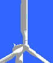

Power Control of Wind Turbines

Wind turbines are designed to produce electrical energy as cheaply
as possible. Wind turbines are therefore generally designed so
that they yield maximum output at wind speeds around 15 metres
per second. (30 knots or 33 mph). Its does not pay to design
turbines that maximise their output at stronger winds, because
such strong winds are rare.
 In case of stronger winds it is necessary
to waste part of the excess energy of the wind in order to avoid
damaging the wind turbine. All wind turbines are therefore designed
with some sort of power control. There are two different
ways of doing this safely on modern wind turbines.
In case of stronger winds it is necessary
to waste part of the excess energy of the wind in order to avoid
damaging the wind turbine. All wind turbines are therefore designed
with some sort of power control. There are two different
ways of doing this safely on modern wind turbines.
Pitch
Controlled Wind Turbines
On
a pitch controlled wind turbine the turbine's electronic controller
checks the power output of the turbine several times per second.
When the power output becomes too high, it sends an order to
the blade pitch mechanism which immediately pitches (turns) the
rotor blades slightly out of the wind. Conversely, the blades
are turned back into the wind whenever the wind drops again.
 The rotor blades thus have to be able to
turn around their longitudinal axis (to pitch) as shown in the
picture.
The rotor blades thus have to be able to
turn around their longitudinal axis (to pitch) as shown in the
picture.
Note, that the picture is exaggerated:
 During normal operation the blades will pitch
a fraction of a degree at a time - and the rotor will be turning
at the same time.
During normal operation the blades will pitch
a fraction of a degree at a time - and the rotor will be turning
at the same time.
 Designing a pitch controlled wind turbine
requires some clever engineering to make sure that the rotor
blades pitch exactly the amount required. On a pitch controlled
wind turbine, the computer will generally pitch the blades a
few degrees every time the wind changes in order to keep the
rotor blades at the optimum angle in order to maximise output
for all wind speeds.
Designing a pitch controlled wind turbine
requires some clever engineering to make sure that the rotor
blades pitch exactly the amount required. On a pitch controlled
wind turbine, the computer will generally pitch the blades a
few degrees every time the wind changes in order to keep the
rotor blades at the optimum angle in order to maximise output
for all wind speeds.
 The pitch mechanism is usually operated using
hydraulics.
The pitch mechanism is usually operated using
hydraulics.
Stall Controlled
Wind Turbines
(Passive) stall controlled wind turbines have the rotor blades
bolted onto the hub at a fixed angle.
 The geometry of the rotor blade profile,
however has been aerodynamically designed to ensure that the
moment the wind speed becomes too high, it creates turbulence
on the side of the rotor blade which is not facing the wind as
shown in the picture on the previous page. This stall
prevents the lifting force of the rotor blade from acting on
the rotor.
The geometry of the rotor blade profile,
however has been aerodynamically designed to ensure that the
moment the wind speed becomes too high, it creates turbulence
on the side of the rotor blade which is not facing the wind as
shown in the picture on the previous page. This stall
prevents the lifting force of the rotor blade from acting on
the rotor.
 If you have read the section on aerodynamics
and aerodynamics and stall, you will
realise that as the actual wind speed in the area increases,
the angle of attack of the rotor blade will increase, until at
some point it starts to stall.
If you have read the section on aerodynamics
and aerodynamics and stall, you will
realise that as the actual wind speed in the area increases,
the angle of attack of the rotor blade will increase, until at
some point it starts to stall.
 If you look closely at a rotor blade for
a stall controlled wind turbine you will notice that the blade
is twisted slightly as you move along its longitudinal
axis. This is partly done in order to ensure that the rotor blade
stalls gradually rather than abruptly when the wind speed reaches
its critical value. (Other reasons for twisting the blade are
mentioned in the previous section on aerodynamics).
If you look closely at a rotor blade for
a stall controlled wind turbine you will notice that the blade
is twisted slightly as you move along its longitudinal
axis. This is partly done in order to ensure that the rotor blade
stalls gradually rather than abruptly when the wind speed reaches
its critical value. (Other reasons for twisting the blade are
mentioned in the previous section on aerodynamics).
 The basic advantage of stall control is that
one avoids moving parts in the rotor itself, and a complex control
system. On the other hand, stall control represents a very complex
aerodynamic design problem, and related design challenges in
the structural dynamics of the whole wind turbine, e.g. to avoid
stall-induced vibrations. Around two thirds of the wind turbines
currently being installed in the world are stall controlled machines.
The basic advantage of stall control is that
one avoids moving parts in the rotor itself, and a complex control
system. On the other hand, stall control represents a very complex
aerodynamic design problem, and related design challenges in
the structural dynamics of the whole wind turbine, e.g. to avoid
stall-induced vibrations. Around two thirds of the wind turbines
currently being installed in the world are stall controlled machines.
Active
Stall Controlled Wind Turbines
An increasing number of larger wind turbines (1 MW and up) are
being developed with an active stall power control mechanism.
 Technically the active stall machines resemble
pitch controlled machines, since they have pitchable blades.
In order to get a reasonably large torque (turning force) at
low wind speeds, the machines will usually be programmed to pitch
their blades much like a pitch controlled machine at low wind
speeds. (Often they use only a few fixed steps depending upon
the wind speed).
Technically the active stall machines resemble
pitch controlled machines, since they have pitchable blades.
In order to get a reasonably large torque (turning force) at
low wind speeds, the machines will usually be programmed to pitch
their blades much like a pitch controlled machine at low wind
speeds. (Often they use only a few fixed steps depending upon
the wind speed).
 When the machine reaches its rated
power, however, you will notice an important difference from
the pitch controlled machines: If the generator is about to be
overloaded, the machine will pitch its blades in the opposite
direction from what a pitch controlled machine does. In other
words, it will increase the angle of attack of the rotor blades
in order to make the blades go into a deeper stall, thus wasting
the excess energy in the wind.
When the machine reaches its rated
power, however, you will notice an important difference from
the pitch controlled machines: If the generator is about to be
overloaded, the machine will pitch its blades in the opposite
direction from what a pitch controlled machine does. In other
words, it will increase the angle of attack of the rotor blades
in order to make the blades go into a deeper stall, thus wasting
the excess energy in the wind.
 One of the advantages of active stall is
that one can control the power output more accurately than with
passive stall, so as to avoid overshooting the rated power of
the machine at the beginning of a gust of wind. Another advantage
is that the machine can be run almost exactly at rated power
at all high wind speeds. A normal passive stall controlled wind
turbine will usually have a drop in the electrical power output
for higher wind speeds, as the rotor blades go into deeper stall.
One of the advantages of active stall is
that one can control the power output more accurately than with
passive stall, so as to avoid overshooting the rated power of
the machine at the beginning of a gust of wind. Another advantage
is that the machine can be run almost exactly at rated power
at all high wind speeds. A normal passive stall controlled wind
turbine will usually have a drop in the electrical power output
for higher wind speeds, as the rotor blades go into deeper stall.
 The pitch mechanism is usually operated using
hydraulics or electric stepper motors.
The pitch mechanism is usually operated using
hydraulics or electric stepper motors.
 As with pitch control it is largely an economic
question whether it is worthwhile to pay for the added complexity
of the machine, when the blade pitch mechanism is added.
As with pitch control it is largely an economic
question whether it is worthwhile to pay for the added complexity
of the machine, when the blade pitch mechanism is added.
Other
Power Control Methods
Some older wind turbines use ailerons (flaps) to control
the power of the rotor, just like aircraft use flaps to alter
the geometry of the wings to provide extra lift at takeoff.
 Another theoretical possibility is to yaw
the rotor partly out of the wind to decrease power. This technique
of yaw control is in practice used only
for tiny wind turbines (1 kW or less), as it subjects the rotor
to cyclically varying stress which may ultimately damage the
entire structure.
Another theoretical possibility is to yaw
the rotor partly out of the wind to decrease power. This technique
of yaw control is in practice used only
for tiny wind turbines (1 kW or less), as it subjects the rotor
to cyclically varying stress which may ultimately damage the
entire structure.

|
Back | Home
| Forward |
© Copyright 1999 Soren Krohn.
All rights reserved.
Updated 6 August 2000
http://www.windpower.org/tour/wtrb/powerreg.htm